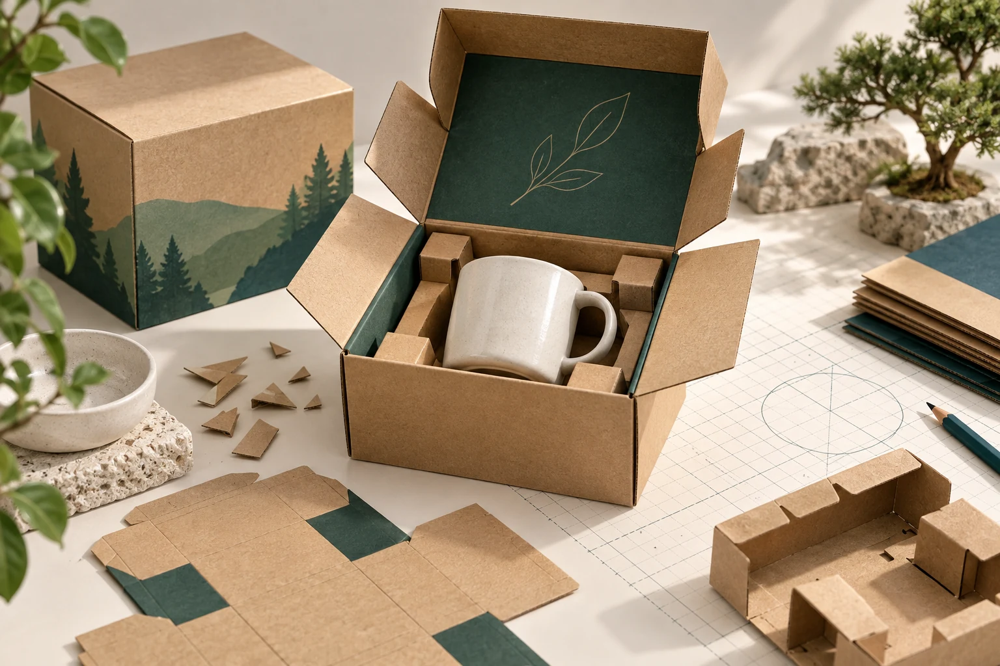
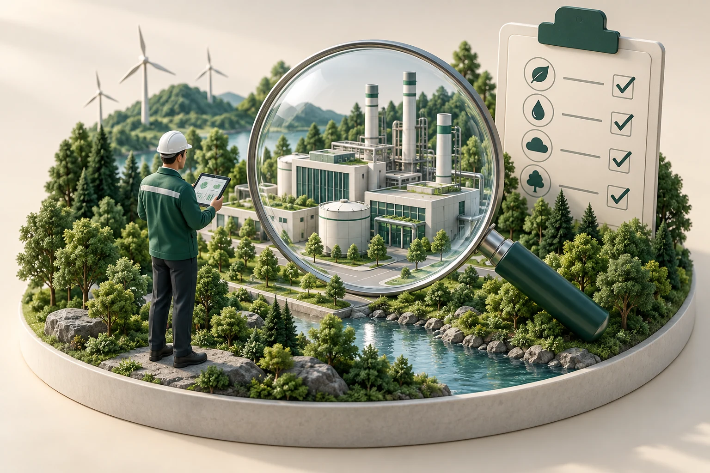
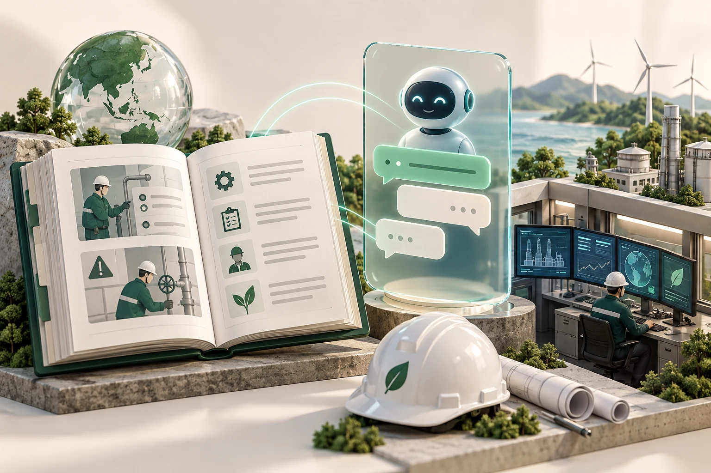
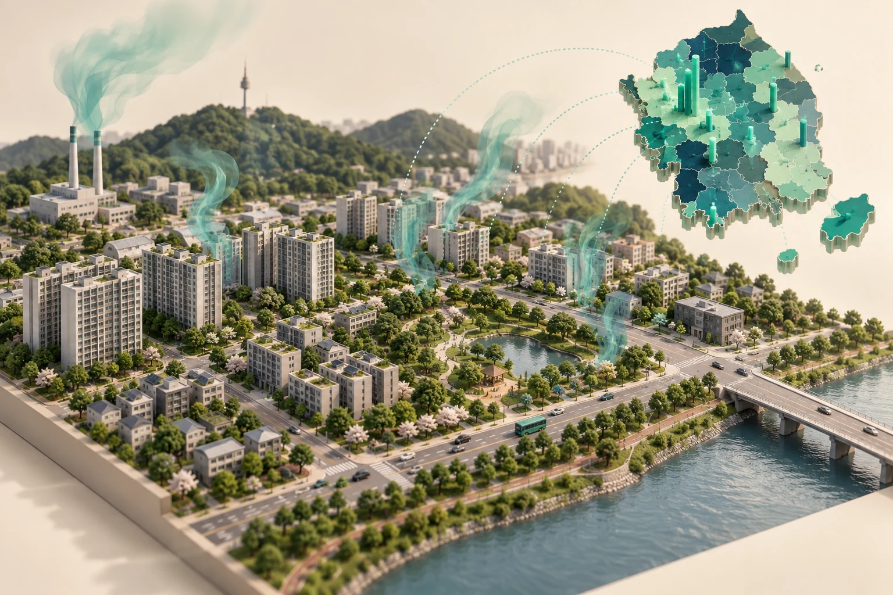
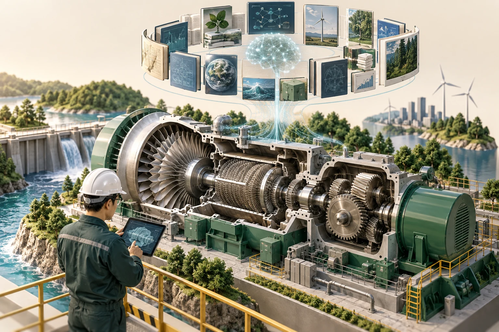
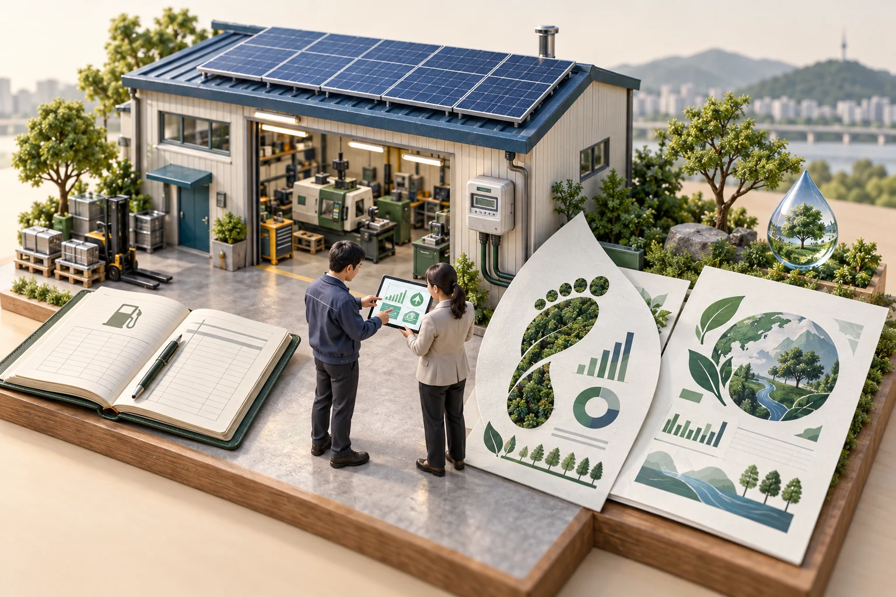

Project 10 / 20
이 팀이 바라보는 현장
AI 기반 최적 설계로 과대포장을 사전에 예방하는 서비스 과제입니다. 포장이 만들어지기 전 설계 단계에 초점을 맞춥니다.
PROJECT 10 · 서비스기획
FIT BOX(피트 박스)
AI 기반 최적 설계로 과대포장을 사전에 예방하는 서비스 과제입니다. 포장이 만들어지기 전 설계 단계에 초점을 맞춥니다.

AI 기반 최적 설계로 과대포장을 사전에 예방하는 서비스 과제입니다. 포장이 만들어지기 전 설계 단계에 초점을 맞춥니다.

No.01과제 보기 →사업장이 스스로 점검하고, AI가 리스크를 짚어 준다면?

No.02과제 보기 →매뉴얼(SOP)을 챗봇에게 바로 물어볼 수 있다면?

No.03과제 보기 →우리 생활권의 배출, 지도 한 장으로 보인다면?
화학물질 배출량 조사, 자동으로 검증까지

No.05과제 보기 →발전설비 정비, 필요한 지식을 AI가 먼저 추천

No.06과제 보기 →사용량만 넣으면 탄소 배출량부터 ESG 보고서까지